Chapter 4 Numbers on the Machine: Formats, Rounding and Stable Algorithms
Every tensor in this book is a block of bits, and how many bits we spend on each number is one of the largest levers a systems engineer has. Halve the bytes per parameter and a model needs half the memory, a decode step moves half the bytes across the HBM bus, and the tensor cores run up to twice as many multiply-adds per second. Most of the speedups of the past decade of LLM training and inference—BF16 training, FP8 GEMMs, 4-bit weights, quantised KV caches, the FP4 tensor cores of the newest GPUs—are, at bottom, decisions about number formats. They are also the source of a whole class of failures that look like modelling problems: losses that diverge for no visible reason, updates that silently do nothing, attention logits that overflow, gradients that underflow to zero.
This chapter treats number formats and numerical algorithms as a first-class systems topic. We start from integers and the bit-level definition of IEEE 754 floating point, and build the 8-, 6- and 4-bit formats that modern accelerators add. We then study what arithmetic does to them: rounding (including stochastic rounding, the weight update that silently vanishes, and compensated summation), the precision of the accumulators inside matrix multiplication (from the FP32 sums of tensor cores to the limited-precision FP8 accumulators of Hopper and the promotion that repairs them), and finally the numerically stable one-pass algorithms (logsumexp, online softmax, Welford) that make fused kernels such as FlashAttention possible.
Chapter 2 introduced dtypes and Chapter 3 the roofline; this chapter and the next are the complete treatment of formats and numerics that the training chapters (Chapter 20, Chapter 23) and the inference chapters (Chapter 48, ??) build on. Here we look at one number and one operation at a time; Chapter 5 adds the scales that let a narrow format hold a whole tensor (block scaling, MX and NVFP4), the mathematics of quantisation, and the mixed-precision recipes assembled from both. All code lives in llmsys/numerics.py, a bit-exact simulator of every format discussed, which we test against PyTorch’s own casts; the lab (Lab 4) re-implements its core and measures what precision does on the A100.
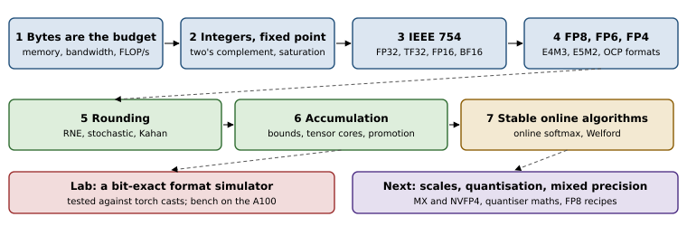
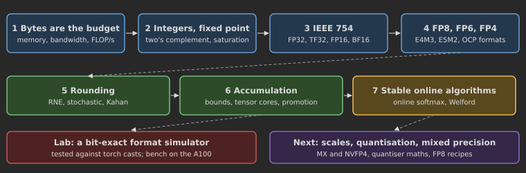
4.1 Why numbers are a systems topic
A model with \(N\) parameters stored at \(b\) bits each occupies \(Nb/8\) bytes. Three resources scale with \(b\):
Capacity. An 8B-parameter model needs 32 GB in FP32, 16 GB in BF16, 8 GB in FP8 and about 4.3 GB in a 4-bit format with group scales. Only the last three fit next to a KV cache on one A100-40GB.
Bandwidth. A memory-bound kernel’s time is bytes divided by bandwidth (Section 3.2). Halving \(b\) halves the time of every decode step whose cost is dominated by reading weights.
Compute. Tensor cores process narrower operands at proportionally higher rates, because a multiplier’s area grows roughly with the square of the mantissa width and the same datapath can be split into more, narrower lanes.
Table 4.1 collects the datasheet peaks of the GPUs this book refers to, together with what we measure on our A100.
| Format | A100 datasheet | A100 measured (8192\(^3\) GEMM) | H100 SXM datasheet | B200 datasheet |
|---|---|---|---|---|
| FP32 (CUDA cores) | 19.5 | 18.1 | 67 | – |
| TF32 | 156 | 102 | 495 | 1,100 |
| FP16 / BF16 | 312 | 210 / 217 | 989 | 2,250 |
| FP8 | – | – | 1,979 | 4,500 |
| INT8 (TOPS) | 624 | 335 (B column-major) / 58 (row-major) | 1,979 | 4,500 |
| FP4 | – | – | – | 9,000 |
Two things in the measured column deserve a comment. The PCIe A100 reaches about 70% of its BF16 peak on a large GEMM; the card is power-limited to 250 W and lowers its clock under sustained tensor-core load, so the datasheet number is a ceiling, not a target. And the INT8 result depends almost entirely on memory layout.
Systems Lens: A peak needs a kernel that exists
torch._int_mm on two row-major 8192$$8192 INT8 matrices runs at 58 TOPS on our A100, slower than BF16. Storing the second operand column-major (b.t().contiguous().t()) gives 335 TOPS. The integer tensor-core GEMMs in cuBLASLt are built for the “TN” layout in which both operands are contiguous along \(K\); for other layouts the library falls back to a much slower path or inserts transposes. Every low-precision format has such fine print: alignment of \(K\) to 16 or 32 elements, scale-factor layouts, which operand may be transposed. A format is only as fast as the kernels that implement it, which is why the chapters on kernels (??, ??) spend so much time on layouts.
Napkin Math: What the format of the weights buys a decode step
Decoding one token of an 8B-parameter dense model at batch 1 reads every weight once. At the A100’s 1.555 TB/s the floor is \(16\text{ GB}/1.555\text{ TB/s}\approx10.3\) ms in BF16, 5.1 ms in FP8 and 2.7 ms in a 4-bit format with one FP16 scale and one FP16 zero point per 128 weights (4.25 bits per weight, 4.25 GB). The arithmetic is identical in all three cases; only the bytes change. Prefill at a few thousand tokens per sequence is compute-bound instead, and there the format matters through the tensor-core rate: FP8 doubles the H100’s peak over BF16, FP4 doubles the B200’s again.
The price of fewer bits is error, and the rest of the chapter is about controlling it. Error enters in three ways that we treat separately: representation (a number is replaced by its nearest neighbour on the format’s grid), range (numbers too large overflow, numbers too small underflow to zero), and arithmetic (every operation rounds its result, and errors compound along long sums). This chapter treats representation and arithmetic, where careful rounding and wide accumulation keep errors from compounding; Chapter 5 treats range, which scaling fixes. Representation error is what is left: the irreducible cost we pay for the bytes we save.
4.2 Integers and fixed point
An unsigned \(b\)-bit integer with bits \(d_{b-1}\dots d_0\) has the value \(\sum_i d_i 2^i\), a range of \([0, 2^b-1]\). Two’s complement gives the most significant bit the weight \(-2^{b-1}\): \[v = -d_{b-1}2^{b-1} + \sum_{i=0}^{b-2} d_i 2^i, \qquad v\in[-2^{b-1},\,2^{b-1}-1]. \tag{4.1}\] Its virtue is that addition, subtraction and multiplication of signed numbers use exactly the same circuits as unsigned arithmetic modulo \(2^b\); negation is “invert the bits and add one”. INT8 covers \([-128, 127]\), INT4 \([-8, 7]\). The range is asymmetric, so quantisers often use the narrow range \([-127, 127]\) to keep \(\pm\) symmetric.
When a result leaves the range there are two policies. Hardware adders wrap around: the result is reduced modulo \(2^b\), so \(127+1=-128\) in INT8, the largest positive number becoming the most negative one. Quantisers and digital signal processors saturate: the result is clamped to the nearest representable value. A wraparound in a quantised network is a catastrophic, silent sign flip, so every conversion into a narrow integer type saturates, and every accumulator is made wide enough that it cannot wrap.
Napkin Math: How wide must an integer accumulator be?
An INT8\(\times\)INT8 product has magnitude at most \(128\cdot128=2^{14}\). A dot product of length \(K\) is at most \(K\cdot2^{14}\), which stays below \(2^{31}\) for \(K<2^{17}=131{,}072\). That is why INT8 tensor cores accumulate in INT32: no realistic \(K\) can overflow it, and integer addition is exact, so INT8 GEMMs have no accumulation error at all. Floating-point accumulators, as we will see in Section 4.6, are a different story.
Fixed point reinterprets an integer \(k\) as \(k\cdot2^{-f}\): a Q\(m\).\(f\) number has \(m\) integer and \(f\) fractional bits and a uniform spacing of \(2^{-f}\). Its absolute error is constant, \(2^{-f-1}\) for round-to-nearest, but its relative error is not: a number near \(2^{-f}\) is represented to one bit, a number near \(2^m\) to \(m+f\) bits. Integer quantisation (Section 5.4) is fixed point with a per-tensor or per-block choice of where to put the binary point.
llmsys/numerics.py).
def int_wrap(x, bits, signed=True): # what an integer adder does
m = 1 << bits
r = torch.remainder(x.to(torch.int64), m)
return torch.where(r >= m // 2, r - m, r) if signed else r
def int_saturate(x, bits, signed=True): # what a quantiser does
lo, hi = (-(1 << (bits - 1)), (1 << (bits - 1)) - 1) if signed else (0, (1 << bits) - 1)
return x.to(torch.int64).clamp(lo, hi)
def to_fixed(x, int_bits, frac_bits, signed=True, rounding="rne"):
k = round_scaled(x.double() * 2.0 ** frac_bits, rounding).to(torch.int64)
return int_saturate(k, int(signed) + int_bits + frac_bits, signed) * 2.0 ** -frac_bitsNeural-network tensors span many orders of magnitude: weights near \(10^{-2}\), activations from \(10^{-3}\) to \(10^{3}\), gradients down to \(10^{-8}\). A fixed grid fine enough for the smallest values would need far too many bits for the largest. Floating point solves this by letting the binary point float: it spends some bits on an exponent so that the relative spacing is constant.
4.3 IEEE 754 from the bit level
A binary floating-point format with \(e\) exponent bits and \(m\) fraction (mantissa) bits stores a sign bit \(s\), a biased exponent field \(E\in[0,2^e-1]\) and a fraction field \(F\in[0,2^m-1]\). With the bias \(\beta=2^{e-1}-1\) the value is \[x = \begin{cases} (-1)^s\,\big(1 + F/2^m\big)\,2^{E-\beta} & 1\le E\le 2^e-2 \quad\text{(normal)}\\ (-1)^s\,\big(F/2^m\big)\,2^{1-\beta} & E=0 \quad\text{(subnormal, including } \pm0)\\ \pm\infty \text{ if } F=0,\ \text{NaN otherwise} & E = 2^e-1 . \end{cases} \tag{4.2}\] Normal numbers have an implicit leading 1, so they carry \(m+1\) significant bits. The exponent range of normal numbers is \([e_{\min}, e_{\max}] = [1-\beta,\ 2^e-2-\beta]\). The largest finite number is \((2-2^{-m})\,2^{e_{\max}}\), the smallest normal \(2^{e_{\min}}\) and the smallest subnormal \(2^{e_{\min}-m}\). Figure 4.2 draws the layouts of every format in this chapter.
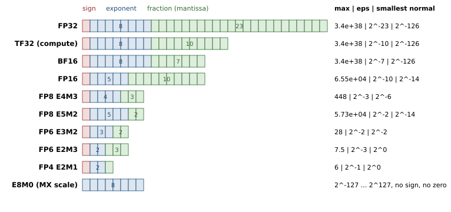
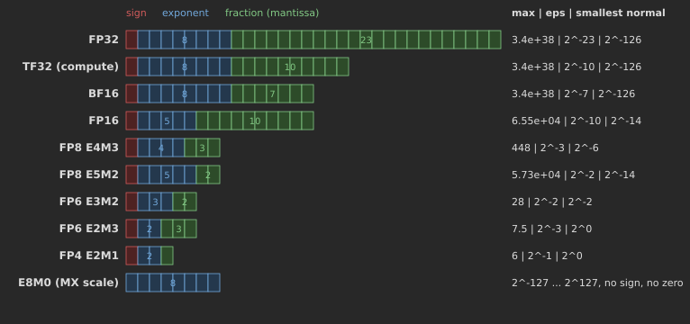
4.3.1 Worked encodings
Take \(x=0.1\) in FP32 (\(e=8\), \(m=23\), \(\beta=127\)). Since \(2^{-4}\le0.1<2^{-3}\), the exponent is \(-4\) and \(E=123=\) 01111011. The significand is \(0.1\cdot2^4=1.6\), so the fraction is \(0.6\), whose binary expansion \(0.1001\,1001\,1001\dots\) repeats. Rounding \(0.6\cdot2^{23}=5{,}033{,}164.8\) to the nearest integer gives \(F=5{,}033{,}165\) = 0x4CCCCD, and the word is 0x3DCCCCCD, the value \(0.100000001490116\). The rounding error, \(1.5\times10^{-9}\), is \(1.5\times10^{-8}\) relative, below the bound \(u=2^{-24}\approx6\times10^{-8}\) that we derive next. The same number in the other formats:
| Format | code | stored value | relative error |
|---|---|---|---|
| FP32 | 0x3DCCCCCD |
0.10000000149 | \(1.5\times10^{-8}\) |
| BF16 | 0x3DCD |
0.10009765625 | \(9.8\times10^{-4}\) |
| FP16 | 0x2E66 |
0.09997558594 | \(2.4\times10^{-4}\) |
| FP8 E4M3 | 0x1D |
0.1015625 | \(1.6\times10^{-2}\) |
| FP8 E5M2 | 0x2E |
0.09375 | \(6.3\times10^{-2}\) |
The simulator computes these codes with the recipe of Listing 4.2: find the binade exponent \(\lfloor\log_2|x|\rfloor\) exactly with frexp, clamp it below at \(e_{\min}\) so that subnormals share the spacing of the smallest binade, divide by the spacing, round to an integer, multiply back, and handle overflow.
round_to_format).
def round_to_format(x, fmt, rounding="rne", saturate=None, generator=None):
sat = fmt.saturate if saturate is None else saturate
a = x.double().abs() # exact for every format here
e = (torch.frexp(a).exponent - 1).clamp(min=fmt.emin) # binade; subnormals use emin
step = torch.ldexp(torch.ones_like(a), e - fmt.mbits) # the ulp of that binade
mag = round_scaled(a / step, rounding, generator) * step # RNE, RTZ, stochastic, ...
over = mag > fmt.max_finite
if rounding == "rtz" or sat:
mag = torch.where(over, fmt.max_finite, mag) # clamp
else:
mag = torch.where(over, math.inf if fmt.has_inf else math.nan, mag)
return torch.copysign(mag, x.double()) # (inf/NaN inputs elided)Every value of every format in this chapter has at most 24 significant bits and is exact in float64, so simulating in float64 and rounding once per operation is bit-exact; the lab’s tests confirm this against torch.float16, torch.bfloat16, torch.float8_e4m3fn and torch.float8_e5m2 over all 65,536 (or 256) codes, every rounding tie and 20,000 random inputs.
4.3.2 Machine epsilon, ulp and the standard model
Inside one binade \([2^k, 2^{k+1})\) the representable numbers are evenly spaced with spacing \(\operatorname{ulp}=2^{k-m}\), the unit in the last place. The spacing doubles from one binade to the next, so the relative spacing \(\operatorname{ulp}(x)/x\) stays between \(2^{-m-1}\) and \(2^{-m}\) for all normal \(x\) (Figure 4.3). Machine epsilon \(\varepsilon=2^{-m}\) is the gap between 1 and the next number; the unit roundoff \(u=\varepsilon/2\) bounds the relative error of round-to-nearest. For any real \(x\) in the normal range, \[\operatorname{fl}(x) = x(1+\delta),\qquad |\delta|\le u = 2^{-(m+1)} , \tag{4.3}\] and IEEE 754 requires the basic operations to be correctly rounded: \(\operatorname{fl}(a\circ b) = (a\circ b)(1+\delta)\) with the same bound. This “standard model” is the basis of every error analysis in this chapter (Higham, 2002). It says that one operation loses at most half a unit in the last place; trouble only comes from many operations, from cancellation when nearly equal numbers are subtracted, and from leaving the normal range.
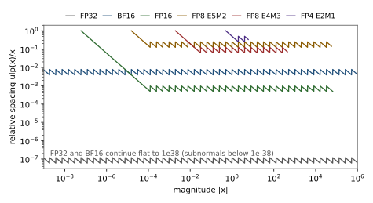
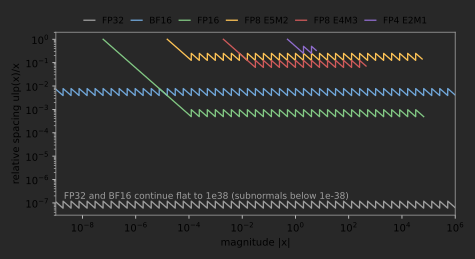
4.3.3 Subnormals, infinities and NaN
Without subnormals the numbers would jump from \(2^{e_{\min}}\) straight to 0, and \(x-y\) could round to 0 although \(x\ne y\). Subnormals fill the gap with the spacing of the smallest binade (Figure 4.4): gradual underflow. They have fewer significant bits (a subnormal \(F/2^m\cdot2^{e_{\min}}\) has as many bits as \(F\) has), so relative precision degrades smoothly toward zero rather than collapsing. CPUs have historically handled subnormals in slow microcode, which is why “flush to zero” modes exist; on NVIDIA GPUs single-precision arithmetic treats them at full speed unless the code is compiled with flush-to-zero (which nvcc --use_fast_math implies).
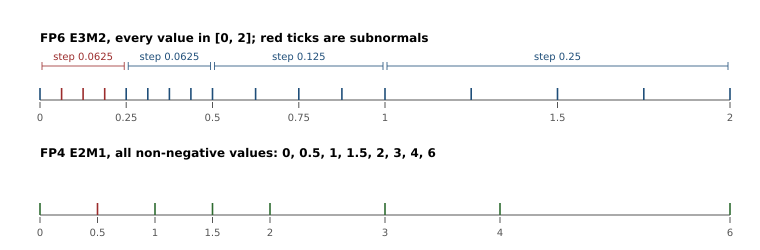
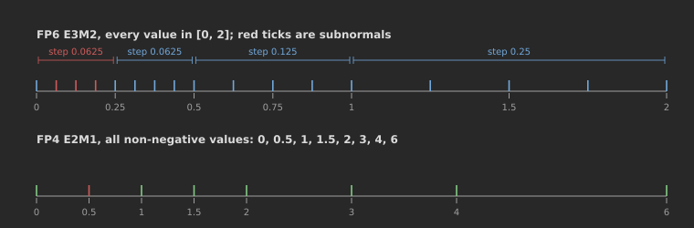
The all-ones exponent encodes \(\pm\infty\) (fraction 0), produced by overflow or division by zero, and NaN (any other fraction), produced by \(0/0\), \(\infty-\infty\) or any operation with a NaN operand. NaN compares unequal to everything including itself, which is how torch.isnan and loss scalers detect it. One NaN in a gradient poisons every parameter it touches in the next all-reduce, so training loops check for non-finite values before applying an update.
4.3.4 FP32, TF32, FP16 and BF16
| Format | bits | \(e\)/\(m\) | bias | max | min normal | min subnormal | \(\varepsilon\) | decades |
|---|---|---|---|---|---|---|---|---|
| FP32 | 32 | 8/23 | 127 | \(3.4\times10^{38}\) | \(1.2\times10^{-38}\) | \(1.4\times10^{-45}\) | \(2^{-23}\) | 83.4 |
| TF32 | 19 | 8/10 | 127 | \(3.4\times10^{38}\) | \(1.2\times10^{-38}\) | \(1.1\times10^{-41}\) | \(2^{-10}\) | 79.5 |
| BF16 | 16 | 8/7 | 127 | \(3.4\times10^{38}\) | \(1.2\times10^{-38}\) | \(9.2\times10^{-41}\) | \(2^{-7}\) | 78.6 |
| FP16 | 16 | 5/10 | 15 | 65,504 | \(6.1\times10^{-5}\) | \(6.0\times10^{-8}\) | \(2^{-10}\) | 12.0 |
| FP8 E5M2 | 8 | 5/2 | 15 | 57,344 | \(6.1\times10^{-5}\) | \(1.5\times10^{-5}\) | \(2^{-2}\) | 9.6 |
| FP8 E4M3 | 8 | 4/3 | 7 | 448 | \(1.6\times10^{-2}\) | \(2.0\times10^{-3}\) | \(2^{-3}\) | 5.4 |
| FP6 E3M2 | 6 | 3/2 | 3 | 28 | 0.25 | 0.0625 | \(2^{-2}\) | 2.7 |
| FP6 E2M3 | 6 | 2/3 | 1 | 7.5 | 1 | 0.125 | \(2^{-3}\) | 1.8 |
| FP4 E2M1 | 4 | 2/1 | 1 | 6 | 1 | 0.5 | \(2^{-1}\) | 1.1 |
FP32 is the reference format: master weights, optimiser states and reductions. TF32 is not a storage format but a tensor-core input mode: an A100 reads FP32 operands, rounds them to 10 fraction bits, multiplies exactly and accumulates in FP32, at 8\(\times\) the FP32 CUDA-core rate. It keeps FP32’s range, so code needs no changes; it is off by default for matmuls in PyTorch (torch.backends.cuda.matmul.allow_tf32). FP16 has three more fraction bits than BF16 but a range of only twelve decades. BF16 is the top half of an FP32 word: the same eight exponent bits, seven fraction bits (Kalamkar et al., 2019).
Key Idea: Why BF16 won for training
Training needs range more than precision. Gradients, activations and their products span far more than FP16’s twelve decades, while SGD-style optimisers are robust to relative errors of \(10^{-2}\) in individual values as long as errors do not systematically accumulate. BF16 keeps FP32’s 78-decade range, so it essentially never overflows or underflows in a well-behaved network and needs no loss scaling; converting from FP32 is rounding off 16 bits; and the narrow mantissa costs little because every accumulation is kept in FP32 (tensor-core accumulators, reductions, optimiser updates). The price is the precision of individual values: BF16’s unit roundoff \(2^{-8}=0.4\%\) is eight times FP16’s, which matters precisely where values are accumulated in place, as in weight updates (Section 4.5).
FP16 fails at both ends. It overflows above 65,504: \(e^x\) overflows for \(x>\ln 65{,}504=11.09\), so a softmax computed without subtracting the maximum (Section 4.7) overflows on perfectly ordinary attention logits; squares of activations above 256 overflow in a norm’s mean of squares; and large models develop “massive activations” thousands of times the median value in a few hidden dimensions (Sun et al., 2024). It underflows below \(6\times10^{-8}\): gradients of deep networks are often \(10^{-6}\) to \(10^{-9}\), and in the subnormal range they keep only a few significant bits. Loss scaling (Section 5.6) shifts the gradients up into range; BF16 makes it unnecessary.
4.4 Low-precision floats: FP8, FP6 and FP4
Eight bits leave room for two sensible splits, and both are in use (Micikevicius et al., 2022; Open Compute Project, 2023). E5M2 follows the IEEE conventions exactly: it is FP16 with the low eight fraction bits removed, keeps infinities and NaNs, and spans 9.6 decades up to 57,344. E4M3 spends one more bit on precision. With IEEE conventions the top binade (exponent field 1111) would be reserved for inf and NaN, giving a maximum of \(1.875\cdot2^7=240\). The OCP format instead gives up infinities and keeps a single NaN pattern per sign, S.1111.111, so the top binade holds seven ordinary numbers and the maximum becomes \(1.75\cdot2^8=448\): almost one binade more range (17.8 instead of 16.9 binades between the largest value and the smallest subnormal) for the cost of two codes. PyTorch calls this format float8_e4m3fn (“finite, NaN”); conversions to it saturate: we measure torch.tensor([1e6, inf]).to(torch.float8_e4m3fn) \(\to[448, 448]\), while E5M2 overflows to inf like any IEEE format. Our FloatFormat dataclass records these conventions as data (specials="ieee"|"fn"|"none", saturate), so one rounding routine serves every format.
@dataclass(frozen=True)
class FloatFormat:
name: str; ebits: int; mbits: int; bias: int
specials: str = "ieee" # "ieee": inf+NaN; "fn": NaN only (all ones); "none": finite only
saturate: bool = False # default overflow policy of conversions
# derived: emax, emin, max_finite, min_normal, min_subnormal, eps, unit_roundoff, decades
FP16 = FloatFormat("fp16", 5, 10, 15)
BF16 = FloatFormat("bf16", 8, 7, 127)
E4M3 = FloatFormat("fp8_e4m3", 4, 3, 7, "fn", saturate=True) # OCP; max 448
E5M2 = FloatFormat("fp8_e5m2", 5, 2, 15) # IEEE-like; max 57344
E2M1 = FloatFormat("fp4_e2m1", 2, 1, 1, "none", saturate=True) # {0, .5, 1, 1.5, 2, 3, 4, 6}The usual division of labour, proposed by Micikevicius et al. (2022) and earlier by Sun et al. (2019), is E4M3 for weights and activations (which need precision and have moderate range) and E5M2 for gradients (which need range). The reason is visible in a measurement. We take a gradient-like tensor, Gaussian values multiplied by a log-normal magnitude (\(\sigma_{\log}=2.5\), so the values span about ten decades), divide it by one scale for the whole tensor, chosen so that its largest magnitude lands on the format’s maximum (scales are the subject of Chapter 5), and cast it to FP8. E4M3 flushes 59% of the elements to zero; E5M2 flushes 0.1%. With one FP32 scale per \(1\times128\) tile instead, E4M3 flushes only 2.2% and has a lower median relative error than E5M2 (2.4% against 4.3%), because each tile’s scale moves its own range into the format’s window (bench.py --only formats; with \(128\times128\) blocks E4M3 still flushes 18%). Fine-grained scaling is what lets DeepSeek-V3 use E4M3 for every tensor (Section 5.7).
Below eight bits the OCP formats drop all special values. FP6 comes as E2M3 (maximum 7.5) and E3M2 (maximum 28); FP4 E2M1 has the eight magnitudes \(\{0, 0.5, 1, 1.5, 2, 3, 4, 6\}\) (Figure 4.4): one decade of dynamic range and one fraction bit. A 4-bit float is less a floating-point number than a tiny non-uniform grid, denser near zero, and is only usable with a scale per small block of values, which is the subject of Chapter 5.
Deeper Dive: Reading the research: FP8 Formats for Deep Learning (Micikevicius et al., 2022)
What it proposes. Two 8-bit encodings: E5M2 with IEEE conventions, and E4M3 with the “no infinities, one NaN pattern” convention that raises its maximum from 240 to 448. Tensors are scaled per tensor before casting; GEMMs take FP8 inputs and accumulate at higher precision; some operations (softmax, normalisation, residuals, the optimiser) stay in 16 or 32 bits. The paper trains image and language models, up to a 175B-parameter GPT-3-style model, with FP8 GEMMs and reports quality matching the 16-bit baselines, and shows post-training FP8 quantisation of 16-bit models.
Cost model in our notation. A GEMM with FP8 inputs moves half the bytes of BF16 and runs at twice the tensor-core rate (1,979 against 989 TFLOP/s on an H100 SXM). The added cost is one amax reduction per scaled tensor (a read of the tensor, or a few instructions in the epilogue of the kernel that produced it) and the multiplication by two scales in the GEMM epilogue. The error model: per-tensor scaling maps \(\max|x|\) to the format maximum; relative representation error per element is then at most \(u=2^{-4}\) (E4M3) or \(2^{-3}\) (E5M2) inside the normal range, and elements more than 17.8 (or 31.8) binades below the maximum are lost.
What our code reproduces. The format constants exactly (448, 57,344, \(2^{-9}\), \(2^{-16}\), and 240 for the IEEE-style E4M3), with encode/decode bit-exact against PyTorch. With per-tensor scaling on a Gaussian tensor, numerics.fake_quantize gives a signal-to-quantisation-noise ratio of 31.6 dB for E4M3 and 25.6 dB for E5M2: the six decibels per mantissa bit that the uniform-noise model predicts. On the heavy-tailed gradient-like tensor above, E4M3 loses 59% of the elements and E5M2 0.1%, which is the paper’s argument for E5M2 gradients. The emulated per-tensor E4M3 GEMM of Section 5.1 has a relative error of 3.7%, dominated by input representation.
What is out of reach, and what the reproduction covers. None of the paper’s end-to-end quality numbers can be reproduced on our machine. Its training results need FP8 tensor cores, which the A100 does not have (FP8 GEMMs can only be emulated in FP32, which reproduces the numerics but not the speed), and a compute budget of large GPU clusters for weeks for the bigger models. Its post-training results need the paper’s pretrained checkpoints and evaluation suites, which the lab does not download. Our reproduction therefore covers exactly the parts that do not depend on a trained model: the encodings and their constants (bit for bit), the per-element error model (the 6 dB per mantissa bit above), the range argument for E5M2 gradients under per-tensor scaling, and the representation error of a per-tensor-scaled FP8 GEMM. Small-model training studies in emulated FP8 are the subject of the low-precision capstone (Chapter 7).
What its evaluation leaves out. It assumes the higher-precision accumulation is effectively FP32; on Hopper the FP8 tensor-core accumulator keeps only about 14 bits, which DeepSeek-V3 had to work around (Section 4.6). Per-tensor scaling with a scale taken from previous iterations is fragile when activations spike, and outlier features grow with training length: Fishman et al. (2025) find instabilities in FP8 training only after hundreds of billions of tokens, far beyond the paper’s runs. And the cost of the amax reductions and casts, which on small tensors can eat the GEMM speedup, is not measured.
4.5 Rounding
Every operation ends by choosing one of the two representable neighbours \(\ell < x < h\) of its exact result. IEEE 754 defines several rules, and accelerators add one more:
- Round to nearest, ties to even (RNE, the default): pick the nearer neighbour; on an exact tie pick the one whose last bit is 0. Ties go up and down equally often, so RNE is unbiased on average.
- Round to nearest, ties away from zero (RNA): used by some conversion instructions, for example PTX’s FP32-to-TF32 conversion
cvt.rna.tf32.f32. Biased upward in magnitude on ties. - Round toward zero (RTZ, truncation): drop the extra bits. Cheapest in hardware, and biased: on average it shrinks magnitudes by half an ulp, so a long sum of positive values drifts down.
- Stochastic rounding (SR): round up with probability equal to the distance from \(\ell\), in units of the gap.
4.5.1 Stochastic rounding is unbiased
Write \(x = \ell + f\,q\) with \(q=h-\ell\) the local ulp and \(f\in[0,1)\). Stochastic rounding returns \(h\) with probability \(f\) and \(\ell\) with probability \(1-f\), which is \(\lfloor x/q + U\rfloor q\) for \(U\sim\mathcal{U}[0,1)\). Then \[\mathbb{E}[\operatorname{SR}(x)] = (1-f)\,\ell + f\,(\ell+q) = \ell + fq = x,\qquad \operatorname{Var}[\operatorname{SR}(x)] = q^2 f(1-f) \le \frac{q^2}{4} . \tag{4.4}\] SR is exactly unbiased for every input, not merely on average over inputs, at the price of a variance of up to \(q^2/4\), the square of RNE’s worst-case error \(q/2\); averaged over inputs whose fractions \(f\) are uniform, SR’s mean squared error is \(q^2/6\), twice RNE’s \(q^2/12\). Its error is a random walk: a sum of \(n\) stochastically rounded terms has an error that grows like \(\sqrt{n}\), with high probability (Connolly et al., 2021), where round-to-nearest can lose entire addends systematically.
4.5.2 The update smaller than half an ulp vanishes
In-place accumulation is where rounding bites hardest. Consider a weight \(w\) stored in BF16 and an update \(\delta\) with \(|\delta| < \operatorname{ulp}(w)/2\). The exact sum \(w+\delta\) lies closer to \(w\) than to either neighbour, so RNE returns \(w\): the update is lost, every step, forever. For a typical LLM weight of magnitude 0.02, \(\operatorname{ulp}=2^{-13}\) and the threshold is \(6.1\times10^{-5}\); Adam-style updates are of the order of the learning rate, \(10^{-5}\) to \(10^{-4}\), so late in training most updates fall below it. For a weight of magnitude 1 the threshold is \(2^{-8}\approx0.004\) (and \(2^{-9}\) for updates that move it below 1, into the finer binade).
Figure 4.5 measures this on a million weights drawn from \(\mathcal{N}(0, 0.02^2)\), with updates \(10^{-5}(0.5+\xi)\), \(\xi\sim\mathcal{N}(0,1)\), over 10,000 steps. Storing the weights in BF16 and adding updates with RNE leaves 87% of the weights unchanged at the first step, and after 10,000 steps 91.5% of the accumulated displacement is missing. Stochastic rounding of the same BF16 weights tracks the exact trajectory with a relative error of 7.3%, unbiased noise that shrinks relative to the signal as updates accumulate. FP32 master weights, rounded to BF16 only for use, have an error of 0.18%, which is just the final rounding.
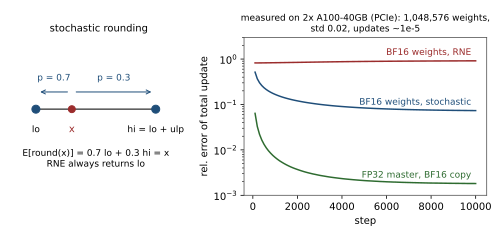
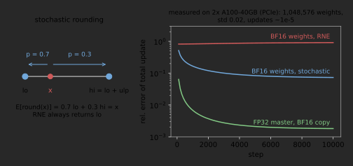
This is why mixed-precision training keeps FP32 master weights (Micikevicius et al., 2018), and why stochastic rounding is the alternative when memory is tight: Gupta et al. (2015) trained networks with 16-bit fixed point using SR, and Zamirai et al. (2020) showed that pure BF16 training with SR or Kahan-compensated weight updates matches FP32. SR also needs no extra storage, while a master copy costs 4 bytes per parameter.
def stochastic_round_bf16(x, generator=None):
bits = x.float().contiguous().view(torch.int32)
r = torch.randint(0, 1 << 16, x.shape, dtype=torch.int32, device=x.device,
generator=generator)
out = ((bits + r) & ~0xFFFF).view(torch.float32) # carry into bit 16 with prob. f
return torch.where(torch.isfinite(x), out, x.float()).to(torch.bfloat16)The integer trick in Listing 4.4 is how kernels implement SR: adding a uniform random integer to the bits that will be discarded produces a carry into the kept bits with probability equal to their value. Hardware SR units use the same idea with fewer random bits, and the number of bits matters. With \(r\) random bits the rounding probability is quantised to multiples of \(2^{-r}\), so fractions below \(2^{-r}\) never round up and the bias returns. Our test of the library checks this: with two random bits, values \(1/8\) of an ulp above a grid point always round down (sr_bits=2), while sixteen bits are unbiased to within sampling error.
4.5.3 Compensated summation
Kahan’s algorithm (Kahan, 1965) recovers the rounding error of each addition and feeds it into the next one:
fmt (each op rounded with rnd).
def kahan_sum(x, fmt):
s = c = 0.0
for t in x:
y = rnd(t - c, fmt) # the addend, corrected by the last step's error
u = rnd(s + y, fmt) # big + small: the low bits of y are lost here
c = rnd(rnd(u - s, fmt) - y, fmt) # (u - s) is what was actually added; minus y = -error
s = u
return sWhen \(|s|\ge|y|\), the difference \(u-s\) is computed exactly (the Fast2Sum property of round-to-nearest binary arithmetic), so \(c\) is exactly the negated rounding error of \(s+y\). The result satisfies \(|\hat S - S| \le (2u + O(nu^2))\sum_i|x_i|\), independent of \(n\) to first order (Higham, 2002). Adding \(10^{-3}\) ten thousand times in BF16 gives 0.5 with a plain accumulator (the sum stops growing once half its ulp exceeds the addend), 9.94 with Kahan and 10.0 with pairwise summation; in FP16 the plain sum stalls at 4.0. Neumaier’s variant (Neumaier, 1974) also handles addends larger than the running sum (sum_kahan(..., neumaier=True)).
4.6 Accumulation precision
4.6.1 Error bounds for summation
Summing \(n\) numbers left to right with the standard model (4.3), the first addend passes through \(n-1\) roundings and the last through one. Expanding the products of \((1+\delta_i)\) terms gives the classic bound \[\Big|\hat S - \sum_i x_i\Big| \le \gamma_{n-1}\sum_i |x_i|,\qquad \gamma_k=\frac{ku}{1-ku}\approx ku . \tag{4.5}\] The bound grows linearly in \(n\). Pairwise (tree) summation adds neighbours in \(\lceil\log_2 n\rceil\) levels, and each element passes through only that many roundings, giving \(\gamma_{\lceil\log_2 n\rceil}\). These are worst cases; with errors of random sign the typical growth is \(\sqrt{n}\,u\) for recursive and \(\sqrt{\log n}\,u\) for pairwise summation. The worst case is not academic, though: when all addends are positive and the sum grows past the point where \(\operatorname{ulp}(S)/2\) exceeds the addends, the sum stagnates, which is the update problem of Section 4.5 in another guise.
For \(n=4096\) in FP16 (\(u=2^{-11}\)) the naive bound’s \(4095u\approx2\) exceeds 1 and says nothing; in FP32 (\(u=2^{-24}\)) it is \(2.4\times10^{-4}\); pairwise in FP16 gives \(12u=0.6\%\). This is the whole argument for accumulating in FP32: inputs can be narrow, because one rounding per input is harmless, but the running sum of a long reduction must be wide.
4.6.2 Dot products on tensor cores
A tensor core multiplies FP16 or BF16 inputs and accumulates in FP32. The products are exact (two 11-bit significands give at most 22 bits, which fit FP32’s 24), so the error comes from the accumulator only. The lab’s matmul_sim simulates a GEMM with any accumulator format: products of each mma_k-wide chunk are combined exactly, then added into an accumulator rounded to acc_fmt.
def matmul_sim(a, b, acc_fmt, mma_k=1, promote_interval=None, split_k=1):
A, B = a.double(), b.double(); K = A.shape[1]
total = torch.zeros(A.shape[0], B.shape[1], dtype=torch.float64)
for lo, hi in k_slices(K, split_k): # split-K: independent slices
out = torch.zeros_like(total)
P = promote_interval or (hi - lo)
for w0 in range(lo, hi, P): # one accumulation window
acc = torch.zeros_like(total)
for k0 in range(w0, min(w0 + P, hi), mma_k): # one MMA instruction
k1 = min(k0 + mma_k, w0 + P, hi)
acc = rnd(acc + A[:, k0:k1] @ B[k0:k1, :], acc_fmt)
out = rnd(out + acc, FP32) if promote_interval else acc
total = rnd(total + out, FP32) if split_k > 1 else out
return totalFigure 4.6 (left) shows the relative error of a \(64\times K\) by \(K\times64\) product of FP16 inputs drawn from \(\mathcal{U}[0,1)\), the worst case because every partial sum grows. With an FP16 accumulator the error grows from \(4.8\times10^{-4}\) at \(K=256\) to \(3.6\times10^{-3}\) at \(K=16{,}384\); with a BF16 accumulator from \(3.8\times10^{-3}\) to 0.5, when the sum stagnates; with an FP32 accumulator it stays below \(5\times10^{-7}\). Splitting \(K\) into eight independent slices summed at the end (split-K) cuts the FP16 accumulator’s error by a factor of eight, because each running sum is eight times shorter: split-K is a two-level pairwise summation.
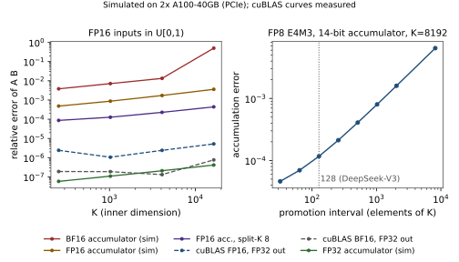
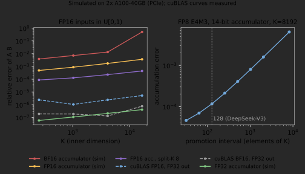
The real cuBLAS GEMMs (FP32 output via torch.mm(..., out_dtype=torch.float32)) tell a more interesting story. On these FP16 inputs the FP16 GEMM has a relative error of \(1\)–\(5\times10^{-6}\), about ten times our FP32 round-to-nearest model and almost independent of \(K\) (\(2.4\times10^{-6}\) at both \(K=256\) and \(K=4096\)); the BF16 GEMM on the same values rounded to BF16 has \(1.3\times10^{-7}\) at \(K=4096\), below the model. To separate the tensor cores from the kernels we ran two further experiments (bench.py --only tcprobe). First, probes in the style of Fasi et al. (2021): inputs chosen so that the exact sum falls between two FP32 numbers. The FP32 SGEMM rounds to nearest; the FP16 and BF16 tensor-core GEMMs return \(1\) for \(1+0.75\) ulp, \(1+7\) ulp for \(1+7.5\) ulp, and the lower neighbour for a negative sum that is an exact tie, that is, they round toward \(-\infty\), identically for both input formats. Fasi et al. reported round-toward-zero on the V100, and a later formal model (Valpey et al., 2025) concludes that the accumulation is not round-toward-zero; our negative probe agrees with the latter. Second, the same BF16-representable data through both kernels: the profiler shows a CUTLASS kernel (cutlass_80_tensorop_s16816gemm_f16) for FP16 and a cuBLAS kernel (ampere_s16816gemm_bf16) for BF16, both with a split-K reduction, and the FP16 kernel’s error is \(5.1\times10^{-7}\) against \(1.4\times10^{-7}\). Since the MMA rounding is the same for both, the difference comes from the kernels (their blocking and split-K), and the rest of the FP16 kernel’s error comes from the inputs’ extra significant bits; we could not attribute it further. What the evidence supports: “FP32 accumulation” on a tensor core is not IEEE round-to-nearest summation, its error depends on which kernel the library picks for a shape and dtype, and results are not bit-reproducible across GPU generations or GEMM kernels.
Pitfall: Floating-point addition is not associative
\((a+b)+c\) and \(a+(b+c)\) round differently, so any change in summation order changes the low bits of the result: a different GEMM tile size, a split-K that uses atomics, a different number of GPUs in an all-reduce, a different batch size in a fused kernel. Bitwise reproducibility therefore needs fixed reduction orders (deterministic algorithms, torch.use_deterministic_algorithms(True)), and “the loss differs in the fifth digit after I changed the parallelism” is expected, not a bug.
4.6.3 FP8 accumulation on Hopper and promotion
DeepSeek-AI (2024) report that the accumulation inside H800 FP8 GEMMs “is limited to retaining around 14 bits”, and that for \(K=4096\) this gives a maximum relative error of nearly 2%. Their fix is promotion: after every \(N_C=128\) elements of \(K\) (four WGMMA instructions of depth 32), the partial sum is copied to FP32 registers on the CUDA cores and added there, and the tensor-core accumulator restarts from zero. We model the accumulator as a float with 13 fraction bits that truncates (ACC_E8M13, acc_rounding="rtz"); this is a model consistent with the report, not a documented hardware format.
With per-tensor E4M3 scaling and no promotion (bench.py --only promotion), our model’s accumulation error (against the exact product of the dequantised FP8 inputs) grows linearly with \(K\): \(3.0\times10^{-4}\) at \(K=512\), \(3.5\times10^{-3}\) at 4096 and \(6.6\times10^{-3}\) at 8192 in relative Frobenius norm. The largest elementwise relative error among outputs above the median magnitude is 1.1% at \(K=4096\) and 2.1% at \(K=8192\), the same order as the reported “nearly 2%”. Promotion every 128 elements makes the error independent of \(K\), \(1.2\times10^{-4}\) (0.05% maximum). The right panel of Figure 4.6 shows the error against the interval: \(4.6\times10^{-5}\) at 32, \(1.2\times10^{-4}\) at 128 (2.5 times more for 4 times the interval), then almost exactly linear from 128 up, doubling with every doubling to \(6.5\times10^{-3}\) without promotion. In the linear regime truncation adds a bias of about half an accumulator ulp per addition, which grows with the number of additions in a window rather than like a random walk; at short intervals the partial sums are small and their ulp is fine, so the growth is slower. Promotion every 128 costs a few CUDA-core instructions per 128-deep slice, which DeepSeek hide by overlapping the promotion of one warpgroup with the MMAs of another.
4.7 Numerically stable online algorithms
4.7.1 Logsumexp and stable cross-entropy
\(\log\sum_i e^{x_i}\) overflows as soon as one \(x_i\) exceeds 88.7 in FP32 (11.09 in FP16), and underflows to \(\log 0\) if all \(x_i\) are very negative. Shifting by the maximum \(m=\max_i x_i\) fixes both: \[\log\sum_i e^{x_i} = m + \log\sum_i e^{x_i-m},
\tag{4.6}\] because every exponent is now \(\le0\) (no overflow) and at least one term equals 1 (no underflow of the sum). Softmax is \(e^{x_i-\operatorname{lse}(\mathbf{x})}\), and cross-entropy for target \(t\) is \(\operatorname{lse}(\mathbf{z})-z_t\), which never forms a probability that could round to zero and then be logged. With a 150k-entry vocabulary and BF16 logits this computation must be done in FP32: the sum has 150,000 terms (Section 4.6), and numerics.cross_entropy_stable casts first.
4.7.2 Online softmax
The shifted form needs the maximum before the sum, which suggests two passes over \(\mathbf{x}\): one for \(m\), one for \(\sum e^{x_i-m}\). When \(\mathbf{x}\) is a row of attention scores that is computed block by block and never stored, a second pass means recomputing it. The online softmax (Milakov and Gimelshein, 2018) keeps a running maximum \(m\) and a running sum \(\ell\) relative to it, and corrects the sum whenever the maximum grows. After processing blocks \(1..j\), the invariant is \(\ell_j=\sum_{i\in1..j} e^{x_i-m_j}\) with \(m_j\) the maximum so far. A new block \(B\) gives \(m_{j+1}=\max(m_j,\max_{i\in B}x_i)\) and, by the rescaling identity \(e^{x-m_j}=e^{x-m_{j+1}}e^{m_{j+1}-m_j}\), \[\ell_{j+1} = e^{m_j-m_{j+1}}\,\ell_j + \sum_{i\in B} e^{x_i-m_{j+1}} . \tag{4.7}\] The invariant holds by induction, with \(m_0=-\infty\), \(\ell_0=0\), and at the end \(\operatorname{lse}=m+\log\ell\). Every exponent is \(\le0\) at every step, so the algorithm is as stable as the two-pass one.
The same identity applies to anything linear in the exponentials. For attention we need \(\mathbf{o}=\sum_i \operatorname{softmax}(\mathbf{s})_i\,\mathbf{v}_i\); keeping an unnormalised output \(\mathbf{o}_j=\sum_{i\le j}e^{s_i-m_j}\mathbf{v}_i\) and rescaling it with the same factor, \[\mathbf{o}_{j+1} = e^{m_j-m_{j+1}}\,\mathbf{o}_j + \sum_{i\in B} e^{s_i-m_{j+1}}\mathbf{v}_i, \qquad \text{output } \mathbf{o}/\ell, \tag{4.8}\] computes softmax-weighted sums in a single streaming pass that never materialises the \(N\times N\) score matrix (Figure 4.7). This is the mathematical root of FlashAttention (Chapter 9, Section 9.8); everything else in FlashAttention is the tiling that keeps \((m,\ell,\mathbf{o})\) in registers and the blocks of \(\mathbf{K},\mathbf{V}\) in shared memory.
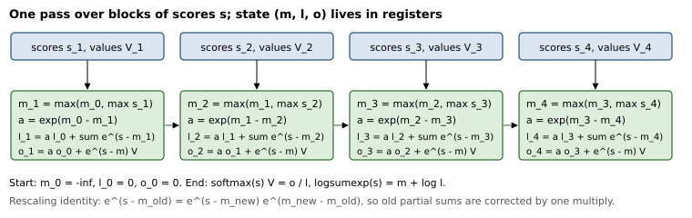
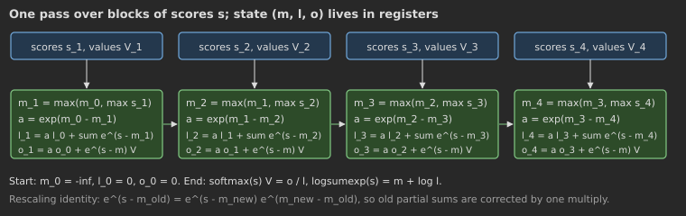
numerics.online_softmax_matmul).
def online_softmax_matmul(s, v, block=128):
m = torch.full(s.shape[:-1], -math.inf, dtype=s.dtype)
l = torch.zeros_like(m)
o = torch.zeros(*s.shape[:-1], v.shape[-1], dtype=s.dtype)
for j in range(0, s.shape[-1], block):
sb = s[..., j:j + block]
m_new = torch.maximum(m, sb.amax(-1))
alpha = torch.where(m == -math.inf, 0.0, torch.exp(m - m_new)) # rescale old state
p = torch.exp(sb - m_new[..., None])
l = l * alpha + p.sum(-1)
o = o * alpha[..., None] + p @ v[..., j:j + block, :]
m = m_new
return o / l[..., None]Two states \((m_a,\ell_a,\mathbf{o}_a)\) and \((m_b,\ell_b,\mathbf{o}_b)\) computed on disjoint blocks can also be merged with the same rescaling, in any order; this is how split-KV decoding kernels parallelise one query over a long cache; one of the exercises asks for the merge.
Systems Lens: One pass is a memory-traffic decision
The online form is not only a numerical trick. A two-pass softmax over attention scores must either store the scores between the passes or compute them twice. For one head at \(N=8{,}192\) tokens the FP32 score matrix is \(8192^2\cdot4\) bytes \(=256\) MiB; writing it once and reading it once at 1.555 TB/s takes about 0.35 ms, while the \(\mathbf{Q}\mathbf{K}^{\top}\) that produced it is \(2N^2d=17\) GFLOP at \(d=128\), about 55 \(\mu\)s at the A100’s 312 TFLOP/s. Materialising the scores would cost six times the matmul that made them. The online softmax replaces those 256 MiB by three running values per query row, \((m,\ell,\mathbf{o})\), which fit in registers; the price is one extra exponential and one multiply per block to rescale them, cheap work on a machine that has far more FLOP/s than bytes per second.
4.7.3 Welford’s algorithm
The variance \(\frac1n\sum x_i^2 - \bar x^2\) in one pass is a textbook example of catastrophic cancellation: when \(|\bar x|\gg\sigma\) both terms are huge and nearly equal. For FP32 values \(10^4+\mathcal{N}(0,1)\) we measure “variances” of 8, 8 and \(-24\) for three rows whose true variance is about 1. Welford’s algorithm (Welford, 1962) updates the mean and the sum of squared deviations \(M_2\) incrementally: \[\delta = x_k-\bar x_{k-1},\qquad \bar x_k = \bar x_{k-1}+\frac{\delta}{k},\qquad M_{2,k} = M_{2,k-1} + \delta\,(x_k-\bar x_k), \tag{4.9}\] with variance \(M_{2,n}/n\). It never subtracts two large numbers and gives 1.0336, 0.9806, 0.9994 against the exact 1.0337, 0.9809, 0.9993 for the same rows. Partial results from different threads merge exactly (Chan et al., 1983): with \(\Delta=\bar x_b-\bar x_a\) and \(n=n_a+n_b\), \(\bar x = \bar x_a + \Delta n_b/n\) and \(M_2 = M_{2,a}+M_{2,b}+\Delta^2 n_an_b/n\). LayerNorm kernels use exactly this: each thread runs Welford over its slice of the row, then warps merge the \((\bar x, M_2, n)\) triples in a tree reduction. RMSNorm needs only \(\sum x_i^2\), has no cancellation, and is one reason it is simpler to fuse (Chapter 11).
Pitfall: A stable algorithm in the wrong precision is still unstable
Online softmax and Welford remove algorithmic cancellation and overflow; they do not make a long accumulation in BF16 accurate. FlashAttention keeps \(m\), \(\ell\) and \(\mathbf{o}\) in FP32 registers even when \(\mathbf{Q}\), \(\mathbf{K}\), \(\mathbf{V}\) are BF16, normalisation kernels accumulate in FP32, and the cross-entropy of BF16 logits is computed in FP32. In the lab, Welford’s running mean in FP32 still drifts by about \(10^{-6}\) relative over 2,048 values of magnitude \(10^4\): each update rounds.
4.8 Research frontier
Open problems. Accumulators for ever narrower inputs. Each new tensor-core generation multiplies narrower operands at a higher rate, and the accumulator inside the MMA is where the saving is paid for. Hopper’s FP8 accumulator keeps about 14 bits (DeepSeek-AI, 2024), the FP32 “accumulation” of the A100’s FP16 and BF16 tensor cores is not round-to-nearest in our probes, and formal models of three generations of tensor cores (Valpey et al., 2025) disagree with earlier empirical ones (Fasi et al., 2021). How wide an accumulator must be for a given \(K\), input format and training horizon, and whether promotion should move into hardware, are open. Trainer/inference numerical mismatch: in reinforcement learning the sampling engine and the trainer compute the “same” log-probabilities with different kernels, batch sizes and precisions, and the small differences bias policy-gradient estimates (Chapter 65); batch-invariant, deterministic kernels (He and Thinking Machines Lab, 2025) remove the batch-size dependence at some cost in speed, and how to get exact agreement cheaply is open. Stochastic rounding in hardware: SR needs a random number per rounding; a few accelerators provide it, mainstream GPUs do not expose it in their MMA units, and how many random bits suffice is a hardware-design question (Croci et al., 2022). Stable algorithms beyond softmax: the online rescaling identity made attention a one-pass reduction; which other reductions in a model (normalisation, losses over very large vocabularies, the scans of linear-attention and state-space layers) admit a one-pass, numerically stable form that a fused kernel can keep in registers is an active question. Alternative number systems: posits (Gustafson and Yonemoto, 2017) and logarithmic formats (Johnson, 2018) promise better accuracy per bit near 1, but need new hardware.
Papers that define the area.
- Higham (2002), Accuracy and Stability of Numerical Algorithms: the standard model, summation bounds and compensated summation that every error analysis here uses.
- Kalamkar et al. (2019), A Study of BFLOAT16: range over precision; made BF16 the default.
- Wang et al. (2018) and Sun et al. (2019): first FP8 training, chunked accumulation, hybrid E4M3/E5M2.
- Micikevicius et al. (2022), FP8 Formats for Deep Learning: the E4M3/E5M2 encodings now in hardware.
- Fasi et al. (2021), Numerical Behavior of NVIDIA Tensor Cores: what the accumulator actually does.
- Valpey et al. (2025), An SMT Formalization of Mixed-Precision Matrix Multiplication: a formal model of three generations of tensor cores, and evidence that their accumulation is not simple truncation.
- DeepSeek-AI (2024), DeepSeek-V3: the 14-bit FP8 accumulator of Hopper and promotion every 128 elements.
- Croci et al. (2022), Stochastic Rounding: Implementation, Error Analysis and Applications: the theory and hardware cost of SR.
- Milakov and Gimelshein (2018), Online Normalizer Calculation for Softmax: the rescaling identity that FlashAttention is built on.
- He and Thinking Machines Lab (2025), Defeating Nondeterminism in LLM Inference: why outputs change with batch size, and batch-invariant kernels that stop it.
Assumptions likely to break. That the accumulator is effectively FP32 (it was not for FP8 on Hopper, and narrower MMAs make it worse). That rounding is deterministic round-to-nearest (FP4 training leans on SR). That every format needs IEEE-style infinities and NaNs (the OCP formats below eight bits have none, and E4M3 trades its infinities for range). That results are reproducible across kernels, batch sizes and GPU generations (they are not, bit for bit). And that a stable algorithm in BF16 is stable: the statistics of online softmax, normalisation and the loss still need FP32.
How to recognise the next variant. Place a new paper on numbers and arithmetic on these axes: (1) the encoding: exponent/fraction split, bias, special values, overflow policy (saturate or infinity); (2) the rounding rule (RNE, toward zero, stochastic, and with how many random bits); (3) the accumulator: its width, its rounding, the MMA depth and the promotion interval; (4) the reduction order and whether results are deterministic and batch-invariant; (5) the algorithmic form: one pass or two, compensated, pairwise or blocked, mergeable across threads; (6) what hardware executes it natively, and at what rate. Most new methods change one or two of these and keep the rest of a known design. Papers that also change where the scales go belong to the axes of Section 5.8.
4.9 Summary
- Bytes per element set capacity, bandwidth and tensor-core rate; most LLM speedups are format decisions. Measured on our A100: 18 TFLOP/s FP32, 102 TF32, 217 BF16, 335 TOPS INT8 (with the right layout).
- Integers wrap in adders and saturate in quantisers; INT8 products accumulate exactly in INT32. Fixed point has constant absolute error, floating point constant relative error.
- A float stores sign, biased exponent and fraction; relative spacing is constant within the normal range (\(u=2^{-(m+1)}\)), subnormals underflow gradually, and range in decades is set by the exponent bits. BF16 won for training because range matters more than precision when accumulation is kept in FP32.
- FP8 comes as E4M3 (OCP, max 448, saturating) and E5M2 (IEEE-like); FP6 and FP4 have no specials and only one or two decades of range. Per-tensor E4M3 flushes 59% of a heavy-tailed gradient tensor to zero, E5M2 0.1%.
- RNE is unbiased, RTZ is not, SR is unbiased for every input with variance at most \(q^2/4\). Updates below half an ulp vanish under RNE: BF16 weights without master copies lose 91.5% of 10,000 small updates; SR loses none on average.
- Summation error grows like \(nu\) (naive), \(u\log_2 n\) (pairwise) or \(2u\) (Kahan). Accumulate wide; split-K and promotion shorten running sums. Tensor-core “FP32 accumulation” is not IEEE round-to-nearest, and a 14-bit FP8 accumulator needs promotion every 128 elements.
- Logsumexp, online softmax and Welford are single-pass, stable streaming reductions; the online softmax rescaling identity is the root of FlashAttention.
Everything in this chapter treated one number, or one operation, at a time. A narrow format can only hold a whole tensor once a scale has moved the tensor’s range into the format’s window, and choosing those scales (how many, in which format, along which dimension, computed when) is where low-precision training and inference are won or lost. Chapter 5 takes up that problem: block scaling with MX and NVFP4, the mathematics of quantisation, and the mixed-precision recipes, DeepSeek-V3’s FP8 recipe among them, that combine everything we have built here.
4.10 Exercises
Exercise 4.1 (Encodings by hand).
Encode \(-0.15625\) and \(1000\) in FP16, BF16, FP8 E4M3 and FP8 E5M2: give the sign, exponent and fraction fields, the hexadecimal code and the stored value. Which encodings are exact? What does E4M3 store for 1000, and what would an IEEE-style E4M3 with infinities store? Check your answers with numerics.encode.
Exercise 4.2 (Designing an 8-bit float).
For an 8-bit format with one sign bit, \(e\) exponent bits and \(7-e\) fraction bits, IEEE-style specials and bias \(2^{e-1}-1\), tabulate the maximum, the smallest subnormal, the dynamic range in decades and the unit roundoff for \(e=2,\dots,6\). Which \(e\) would you pick for weights distributed as \(\mathcal{N}(0, 0.02^2)\) with one per-tensor scale, and which for gradients spanning ten decades? How much range does the OCP “fn” convention add to E4M3, and what does it give up?
Exercise 4.3 (Integer accumulators).
What is the largest \(K\) for which an INT8\(\times\)INT8 dot product cannot overflow an INT32 accumulator? An INT4\(\times\)INT4 product in an INT16 accumulator? Why are integer GEMMs free of accumulation error, and what limits their accuracy instead?
Exercise 4.4 (The half-ulp threshold).
An AdamW update has magnitude close to the learning rate \(\eta\). For BF16 weights of magnitude 0.02 and 1, find the largest \(\eta\) for which all updates are lost under RNE. With \(\eta=3\times 10^{-4}\) decayed to \(3\times10^{-5}\) by a cosine schedule, at which point of training do updates of magnitude-0.02 weights start to vanish? What does an FP32 master copy cost for a 7B model, and what does stochastic rounding cost instead?
Exercise 4.5 (Stochastic rounding with few random bits).
Show that SR with \(r\) random bits (\(U\) uniform on multiples of \(2^{-r}\) in \([0,1)\)) has a bias of at most \(2^{-r}\) ulp, and find the input fractions \(f\) for which the bias is largest. Show that the variance bound \(q^2/4\) still holds. How many random bits make the bias smaller than RNE’s typical error for a sum of \(10^4\) BF16 addends?
Exercise 4.6 (Why Kahan works).
Prove that if \(|a|\ge|b|\) and \(s=\operatorname{fl}(a+b)\) in a binary format with round to nearest, then \(\operatorname{fl}(s-a)\) is computed exactly and \(b-\operatorname{fl}(s-a)\) is the exact rounding error of \(s\). Then trace Kahan summation of \((1, 2^{-9}, 2^{-9}, 2^{-9}, 2^{-9})\) (four small addends) in BF16 and compare with the naive sum.
Exercise 4.7 (Merging online-softmax states).
Two thread blocks process disjoint halves of one attention row and return \((m_a,\ell_a,\mathbf{o}_a)\) and \((m_b,\ell_b,\mathbf{o}_b)\) in the unnormalised form of (4.8). Derive the merge that gives the state of the whole row, prove it is associative, and implement it as a function that the lab’s online_softmax_matmul can be checked against. Where is this used in decoding?
Exercise 4.8 (Research: predict, then measure, the accumulator of your GPU).
Using only torch.mm(a, b, out_dtype=torch.float32) on FP16 inputs, design an experiment that determines whether your GPU’s tensor-core accumulation rounds to nearest or truncates, and how many products it adds before rounding (hint: Fasi et al., 2021, use inputs with carefully chosen exponents). Predict the outcome from our measurement in Section 4.6, run it on an A100 and on any other GPU you can access, and compare the error of \(K=4096\) random products with the RNE and RTZ models of numerics.matmul_sim.
Exercise 4.9 (Research: Kahan-compensated BF16 weights).
Extend the updates experiment of the lab to the setting of Zamirai et al. (2020): BF16 weights \(w\) with a BF16 compensation buffer \(c\), updated by Kahan’s algorithm (Listing 4.5) with the addend \(\delta\) instead of \(x_i\) and the arithmetic done in FP32 and rounded to BF16. Predict, before running, the final relative error of \(w\) against the exact trajectory, next to RNE (91.5%), SR (7.3%) and FP32 master weights (0.18%), and the error of the compensated value \(w-c\). Compare the memory per parameter of the four schemes, then measure on the CPU with --n-weights 65536. Which scheme would you choose for a model whose optimiser states already fill the GPU?
4.11 Lab 4: A bit-exact number-format simulator
Lab 4: A bit-exact number-format simulator
Code: code/labs/lab04_numerics
Goals
Build the core of llmsys/numerics.py yourself: encode and decode every format bit for bit, stochastic rounding, compensated and pairwise summation, the online softmax and Welford’s algorithm, and a GEMM with a limited-precision accumulator, chunked MMAs and periodic promotion. Then measure on a GPU what precision does to weight updates, GEMM error and throughput, and probe the tensor-core accumulator. The scaled formats, quantisers and the block-scaled FP8 GEMM built on these pieces are the next lab (Lab 5); together they are the library the low-precision training capstone (Chapter 7) builds on.
Setup
cd code
python -m pytest -q labs/lab04_numerics # grades starter.py
LAB_IMPL=solution python -m pytest -q labs/lab04_numerics # the reference (seconds, CPU)
CUDA_VISIBLE_DEVICES=0 python labs/lab04_numerics/bench.py # measurements on the GPU
python labs/lab04_numerics/figures.py # redraw this chapter's figuresTasks
- Bits.
decode_floatandencode_floatfor anyFloatFormat, with RNE, saturation and the “ieee”, “fn” and “none” special-value conventions. The tests compare all codes and all ties withtorch.float16,torch.bfloat16,torch.float8_e4m3fnandtorch.float8_e5m2, and FP6 (E2M3, E3M2) and FP4 (E2M1) with literal value tables from the OCP specification. - Stochastic rounding.
stochastic_round; tested for unbiasedness over 40,000 draws and the variance bound of (4.4). - Summation.
pairwise_sumandkahan_sumin a simulated precision; tested against exactfractions.Fractionsums and the bounds of Section 4.6. - Online algorithms.
online_logsumexp,online_softmax,welford; tested against float64 two-pass results, including inputs where the naive formulas overflow or cancel. - Accumulators.
accumulate_gemmwith an accumulator format, an MMA depth, a rounding rule and an optional promotion interval (Listing 4.6); tested bit for bit againstnumerics.matmul_sim, including the 14-bit truncating model of Hopper’s FP8 accumulator, and for the ordering of accumulator precisions measured in Section 4.6.
The last block of tests checks the library itself: the format constants against torch.finfo, FP32 and TF32 encodings, the rounding modes and next_after, the overflow policies, the number of random bits in stochastic rounding and the BF16 bit trick, integers and fixed point, Welford’s merge, the softmax-weighted sum and the stable cross-entropy, and split-K.
Measurements
bench.py writes results/bench_results.{json,md}. On our A100 (measured on 2x A100-40GB (PCIe)): GEMM throughput of Table 4.1; BF16 weights without master copies lose 91.5% of 10,000 small updates, SR 7.3% (noise), FP32 masters 0.18%; FP16-accumulator error \(1.7\times10^{-3}\) at \(K=4096\) against \(2\times10^{-7}\) for FP32; 14-bit FP8 accumulation error \(3.5\times10^{-3}\) without and \(1.2\times10^{-4}\) with promotion every 128 (promotion); per-tensor E4M3 flushes 59% of a heavy-tailed tensor and E5M2 0.1% (formats). The tcprobe experiment produces the tensor-core probes of Section 4.6. Your numbers for the simulated quantities should match ours exactly (they are deterministic); the throughput and cuBLAS numbers depend on your GPU.
Deliverables
Passing tests; your bench_results.md; a half-page note explaining (a) why the INT8 GEMM’s speed depends on layout, (b) the shape of the promotion-interval curve, and (c) what the probes say about the rounding of your GPU’s tensor-core accumulator, with numbers.
Stretch goals
(1) Implement Neumaier summation in the lab and find an input where it beats Kahan. (2) Replace the RNE weight update in the updates experiment by Kahan-compensated BF16 updates (a BF16 compensation buffer per weight) and compare with SR and with FP32 masters at equal memory. (3) Run the accumulator experiment of the research exercise on a different GPU generation.